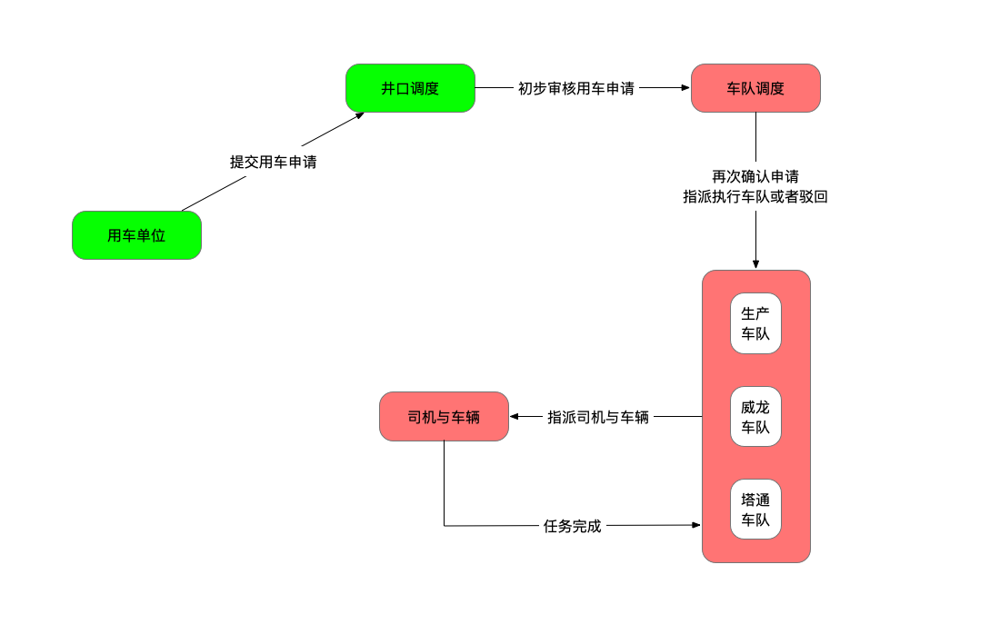
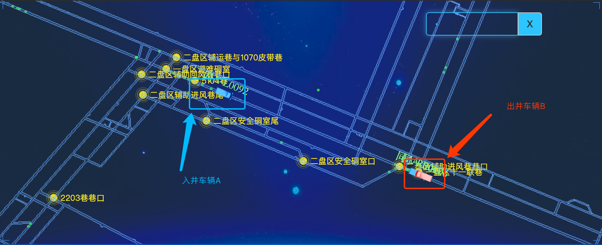

项目阶段背景
辅助运输系统现在进入第二阶段工作（流程如下图），目前“用车单位”和“井口调度”两个环节已经平稳运行了一段时间，主要的问题集中在“车队调度”、“车队”和“司机车辆”的问题。

项目推动进展
通过5月29日开始在车队推广以来，发现了基层使用当中的一些新的合理需求和流程优化的方向。以下列出了一些重点的优化内容：
1 | 塔通威龙车队遇到无定位卡的车辆增加“无效派车”需求 |
这段时间的使用，使之前的用车数据由纸质记录逐渐的转换为数字记录，方便以后根据需求计算统计信息，也可以更好更精确地找出使用中出现的问题与优化方向：
| 分类 | 统计 |
|---|---|
| 订单总数 | 1514 |
| 车队驳回数量 | 148 |
| 车队未指派数量 | 291 |
| 威龙已派车数量 | 487 |
| 威龙未派车数量 | 144 |
| 塔通已派车数量 | 271 |
| 塔通未派车数量 | 122 |
项目发展方向
整个项目各环节都平稳运行起来还需要一些时间的培养和教育，这里主要指的是使用习惯和思维理念方向。随着辅助运输系统的流程优化越来越完善，同时部门对系统的使用也越来越熟练，最后会逐步替代现在的纸质台账派车系统。通过实时监控车辆的空闲状态，达到有效合理地调配运输资源。同时可以更高效地为矿里领导提供各种有效的报表数据，指导安全生产。
项目案例
案例背景
2019年06月12日上午10点左右，塔山煤矿辅助运输车队接到2小时内的紧急用车任务。此时，需要执行任务的无轨胶轮车A已经安排下井任务。车队调度员接到任务后马上通过司机手机通知司机返回车队，由于无轨胶轮车A正处在信号盲区（手机没电或者设备出现故障），电话没有接通。
解决方案
我们通过瑞华车辆定位系统，准确地在地图上找到无轨胶轮车A的位置，发现该车辆刚刚下井不久，位于离井口不远的地方。在确定了无轨胶轮车A的位置后，马上查找附近对向行驶的无轨胶轮车B，并与无轨胶轮车B的司机进行沟通，让他帮忙拦下入井方向的无轨胶轮车A，同时返回车队执行紧急任务。
